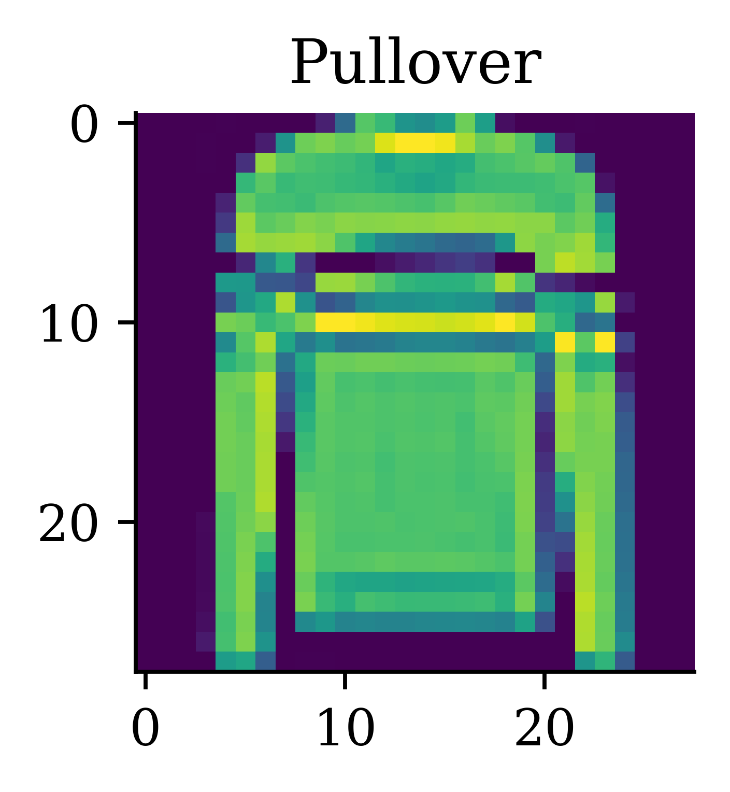
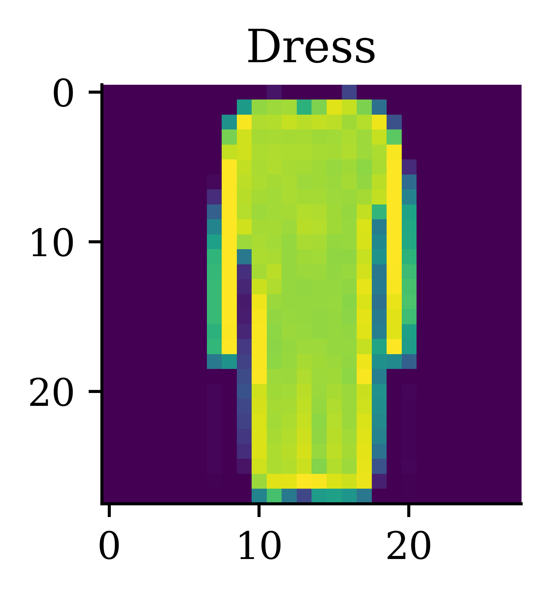
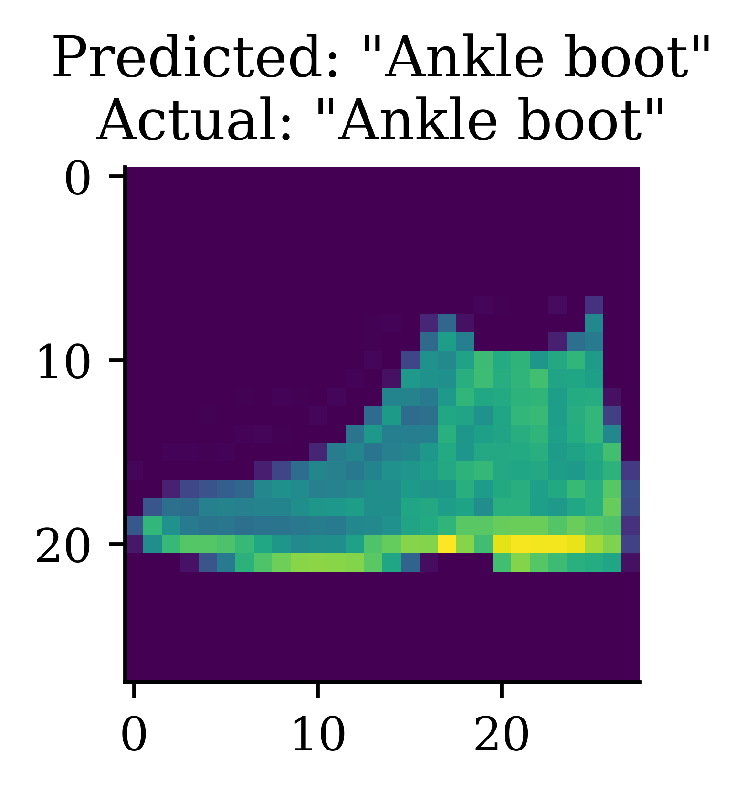
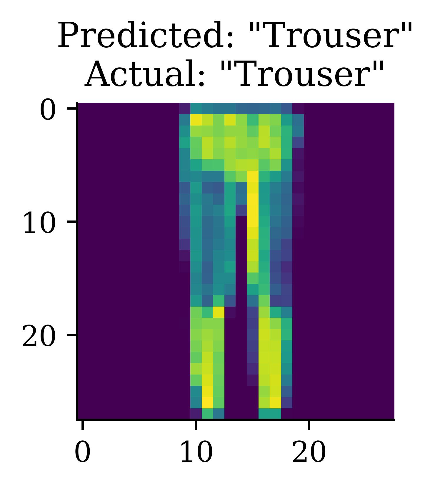
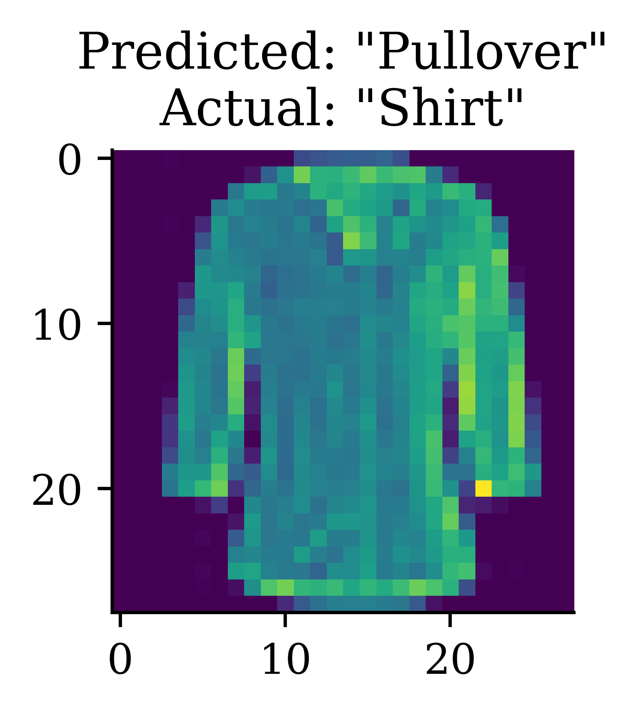

x, y = training_data[5]plt.imshow(x[0])plt.title(classes[y]);

x, y = training_data[25]plt.imshow(x[0])plt.title(classes[y]);

x, y = training_data[30]plt.imshow(x[0])plt.title(classes[y]);
Batch up the data
batch_size =64# Create data loaders.train_dataloader = DataLoader(training_data, batch_size=batch_size)test_dataloader = DataLoader(test_data, batch_size=batch_size)for X, y in test_dataloader:print(f"Shape of X [N, C, H, W]: {X.shape}")print(f"Shape of y: {y.shape}{y.dtype}")break# Get cpu or gpu device for training.# Get cpu or gpu device for training.if torch.cuda.is_available(): device ="cuda"elif torch.backends.mps.is_available(): device ="mps"# If on a Macelse: device ="cpu"
Shape of X [N, C, H, W]: torch.Size([64, 1, 28, 28])
Shape of y: torch.Size([64]) torch.int64
%%timemodel.train()for t inrange(epochs): for X, y in train_dataloader: X, y = X.to(device), y.to(device)# Compute prediction error pred = model(X) loss = loss_fn(pred, y)# Backpropagation optimizer.zero_grad() loss.backward() optimizer.step()print(f"Epoch {t} Loss: {loss.item()}")
Epoch 0 Loss: 2.158100128173828
Epoch 1 Loss: 1.904515027999878
Epoch 2 Loss: 1.5597740411758423
CPU times: user 9.59 s, sys: 1.29 s, total: 10.9 s
Wall time: 11 s
Far more common to subclass
class NeuralNetwork(nn.Module):def__init__(self):super().__init__()self.linear1 = nn.Linear(28*28, 512)self.linear2 = nn.Linear(512, 512)self.linear3 = nn.Linear(512, 10)def forward(self, x): x = F.relu(self.linear1(x.flatten(1))) x = F.relu(self.linear2(x))returnself.linear3(x)torch.manual_seed(0)classy_model = NeuralNetwork().to(device)classy_model
model.eval()num_correct =0test_size =0for X, y in test_dataloader:with torch.no_grad(): pred = model(X.to(device)) num_correct += torch.sum(y.to(device) == pred.argmax(1)).item() test_size +=len(y)print(f"Test accuracy: {100*num_correct/test_size:.2f}%")
Test accuracy: 61.30%
Predict new data
X, y =next(iter(test_dataloader))with torch.no_grad(): pred = model(X.to(device))predicted_classes = [classes[ind] for ind in pred.argmax(1)]actual_classes = [classes[ind] for ind in y]



Other Useful Packages
Tensorflow Probability
import tensorflow_probability as tfptfd = tfp.distributions
In statistics, sometimes we only use a single data set. To still be able to evaluate the performance of the developed prediction model on the same data, sophisticated methods have developed over a long period of time and are still in use in some parts of the statistics community. These methods account for the fact that the model saw the data during fitting and applied corrections to account for that. These methods include, for example, the Akaike Information Criterion (AIC) or the Bayesian Information Criterion (BIC). Don’t get confused. If you have a validation set, you don’t need these methods.
transformers.set_seed(1)print(generator("It's the holidays so I'm going to enjoy")[0]["generated_text"])
It's the holidays so I'm going to enjoy the rest of the time and look forward to this week with new friends!"
transformers.set_seed(1337)print(generator("It's the holidays so I'm going to enjoy")[0]["generated_text"])
It's the holidays so I'm going to enjoy working as much as possible," he told ABC Radio's Today.
On Thursday, Labor leader Bill Shorten made another announcement about his party's plans for the 2015 ballot.
"We
Reading the course profile
context ="""StoryWall Formative Discussions: An initial StoryWall, worth 2%, is due by noon on June 3. The following StoryWalls are worth 4% each (taking the best 7 of 9) and are due at noon on the following dates:The project will be submitted in stages: draft due at noon on July 1 (10%), recorded presentation due at noon on July 22 (15%), final report due at noon on August 1 (15%).As a student at UNSW you are expected to display academic integrity in your work and interactions. Where a student breaches the UNSW Student Code with respect to academic integrity, the University may take disciplinary action under the Student Misconduct Procedure. To assure academic integrity, you may be required to demonstrate reasoning, research and the process of constructing work submitted for assessment.To assist you in understanding what academic integrity means, and how to ensure that you do comply with the UNSW Student Code, it is strongly recommended that you complete the Working with Academic Integrity module before submitting your first assessment task. It is a free, online self-paced Moodle module that should take about one hour to complete.StoryWall (30%)The StoryWall format will be used for small weekly questions. Each week of questions will be released on a Monday, and most of them will be due the following Monday at midday (see assessment table for exact dates). Students will upload their responses to the question sets, and give comments on another student's submission. Each week will be worth 4%, and the grading is pass/fail, with the best 7 of 9 being counted. The first week's basic 'introduction' StoryWall post is counted separately and is worth 2%.Project (40%)Over the term, students will complete an individual project. There will be a selection of deep learning topics to choose from (this will be outlined during Week 1).The deliverables for the project will include: a draft/progress report mid-way through the term, a presentation (recorded), a final report including a written summary of the project and the relevant Python code (Jupyter notebook).Exam (30%)The exam will test the concepts presented in the lectures. For example, students will be expected to: provide definitions for various deep learning terminology, suggest neural network designs to solve risk and actuarial problems, give advice to mock deep learning engineers whose projects have hit common roadblocks, find/explain common bugs in deep learning Python code."""